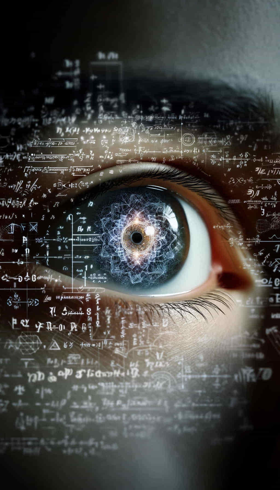

Consciousness Complexity: Bounded Statistical Influence on Quantum Outcomes
Introduction
Consciousness Complexity (CC) is a bounded hypothesis about complex predictive systems and quantum outcome statistics. It proposes that sufficiently organized MPU aggregates, such as biological brains or advanced artificial systems, may weakly bias local `Evolve` probabilities under specific operational conditions.
CC is not the main solution to the measurement problem. Measurement is handled by the universal `Evolve` process, in which an interaction actualizes an outcome relative to a context. CC enters later as a possible small, testable deviation from baseline Born statistics.
Universe 00110000
The Measurement Problem in Quantum Mechanics
The Measurement Problem is a fundamental issue in quantum mechanics that arises from the apparent incompatibility between the deterministic evolution of quantum states according to the Schrödinger equation and the probabilistic nature of quantum measurement outcomes. In essence, it questions why and how a quantum system, which exists in a superposition of multiple states, collapses into a single definite state upon measurement.
The problem can be summarized as follows: Quantum systems are described by wave functions that evolve deterministically according to the Schrödinger equation. However, when a measurement is performed on a quantum system, the wave function appears to collapse into a single definite state, with probabilities given by the Born rule. The act of measurement seems to introduce a non-deterministic, irreversible change in the quantum system, which is not accounted for by the Schrödinger equation.
This apparent discrepancy between the continuous, deterministic evolution of quantum states and the discontinuous, probabilistic nature of measurement outcomes has been a source of ongoing debate and investigation in the foundations of quantum mechanics. Various interpretations of quantum mechanics, have been proposed to address the Measurement Problem, but a conclusive resolution remains elusive.
Relation to Consciousness-Collapse Views
Traditional consciousness-collapse views give consciousness a special role in producing measurement outcomes. The Predictive Universe framework uses a different structure. The `Evolve` process is universal and does not require high-level consciousness. Every measurement-like interaction is a physical update with a probability rule and an interaction context.
CC concerns a narrower question: whether a sufficiently complex predictive aggregate can create a context that slightly biases local outcome probabilities. The effect, if present, is statistical, bounded, and experimentally testable.
Quantifying Consciousness Complexity
To formalize the relationship between consciousness and quantum measurement probabilities, the Consciousness Complexity framework introduces an empirically grounded measure of consciousness complexity (CC). CC is defined as a measure of a system's ability to consistently influence the probabilities of quantum measurement outcomes.
For a given system S, CC should be defined operationally by the size of the probability-modification map induced by the system's context:
CC(S) = ||LS||op
Here LS is a trace-preserving probability-deviation map that sends a baseline quantum state and measurement context to a small deviation ΔP from the Born distribution.
For a two-outcome experiment, the simple difference |Pobs(|1⟩) - PBorn(|1⟩)| can be used as an experimental estimator, not as the full definition of CC.
The Role of Consciousness Complexity in Quantum Measurements
The Consciousness Complexity framework proposes that the context of a complex predictive system can weakly modify local outcome probabilities. A compact operational expression is:
Pobserved(i | S, ψ, C) = PBorn(i | ψ) + ΔP(i | S, C)
where PBorn is the standard Born probability and ΔP is a bounded, context-dependent deviation associated with system S in context C.
The deviation must preserve normalization, remain small enough to prevent deterministic endpoint forcing, and be tested statistically across many trials. A single outcome cannot establish CC.

Universe 00110000
Implications for Idealism and the Nature of Consciousness
The Consciousness Complexity framework is consistent with the philosophical position of idealism as an epistemic starting point. Conscious awareness remains the first certainty of inquiry. The operational claim is narrower: complex predictive organization may correlate with bounded probability deviations in local quantum statistics.
CC therefore remains an empirical proposal. Its support depends on reproducible statistical deviations under controlled conditions, not on treating consciousness as a direct deterministic cause of measurement outcomes.
Conclusion
The Consciousness Complexity framework presents a bounded, empirical hypothesis: complex predictive aggregates may weakly bias local quantum outcome statistics under specific conditions. The measurement problem is handled by the universal `Evolve` process; CC concerns possible deviations around the baseline probability rule.
This framework is compatible with an idealist epistemic starting point because conscious awareness remains the first certainty of inquiry. The physical claim, however, is operational: CC must be measured through reproducible statistical deviations with adequate controls.
The Consciousness Complexity framework opens a research path connecting prediction, context, quantum statistics, and the nature of consciousness.